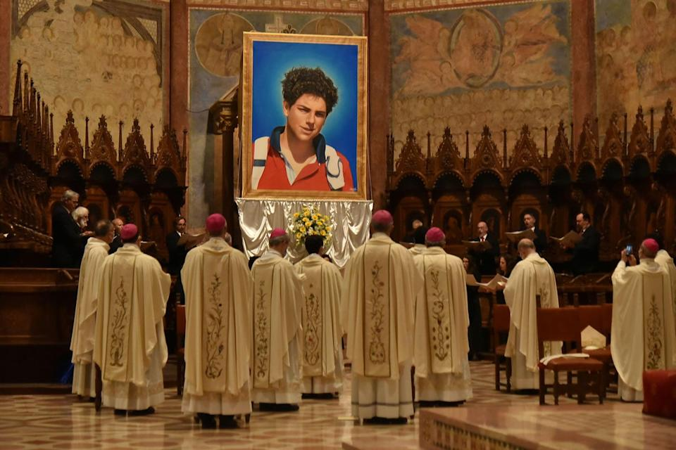

Beatification
Carlo Acutis was beatified on October 10, 2020, in Assisi, Italy. The ceremony was a major moment in the life of the Church, because it recognized his life as a model of Christian holiness and his witness to the Eucharist.

Beatification is the step before canonization. It recognizes that a person lived a holy life and that God worked through the person’s life, often through a miracle approved by the Church.
“The Eucharist is my highway to heaven.”
The Path to Sainthood
The process of sainthood begins with the person’s life being examined. Evidence of holiness, virtue, and a clear witness to the Gospel must be studied. Once miracles are recognized and approved, the Church may declare the person Blessed and later Saint.
Carlo’s life is important because he is remembered as a joyful young person who used modern technology for the Church. His path to sainthood is connected to his faith, his daily prayer, and his simple witness of generosity and holiness.
Why He Is Important
Carlo Acutis became a model for young Catholics because he showed that holiness is possible in ordinary life. He loved friends, practiced faith, cared for the poor through charity, and gave the Church a living example of how the modern world can meet Christian faith.
His Beatification and recognition as a holy witness remind the Church that young people can become signs of Christ’s presence. They are called to believe, pray, and live with courage.